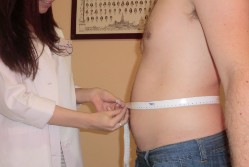
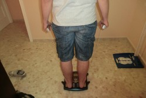

| |  |
 |  |
 El éxito de un tratamiento dietético radica en la personalización de la dieta. Una dieta personalizada te permite conseguir un peso saludable aprendiendo a comer de todo, intentando adaptarse a tus alimentos preferidos y costumbres, para lograr unos hábitos alimentarios saludables. Para ellos, tendrás una atención individualizada y un tratamiento exclusivo y adaptado a tus necesidades. Un control exhaustivo de tu peso y parámetros corporales, así como apoyo apoyo psicológico y motivación, te ayudarán a lograr tus objetivos. Procedimiento clínico
 - En una primera consulta se realiza una entrevista para elaborar la historia clínica, que incluirá una valoración de los hábitos alimenticios y circunstancias emocionales que intervienen en la ingesta de alimentos, así como un estudio antropométrico y análisis con bioimpedancia eléctrica.
- Se elabora una dieta personalizada basada en los diferentes principios metabólicos, gustos, costumbres y circuntancias personales de cada paciente.
- Se realizará un seguimiento donde se valorarán resultados y realizarán los cambios oportunos para conseguir mayor eficacia, asÍ como mantener la motivación que toda dieta requiere.
- Finalmente se darán unas pautas para el mantenimiento del peso conseguido.
|
 |
| |  |
|
| |
|